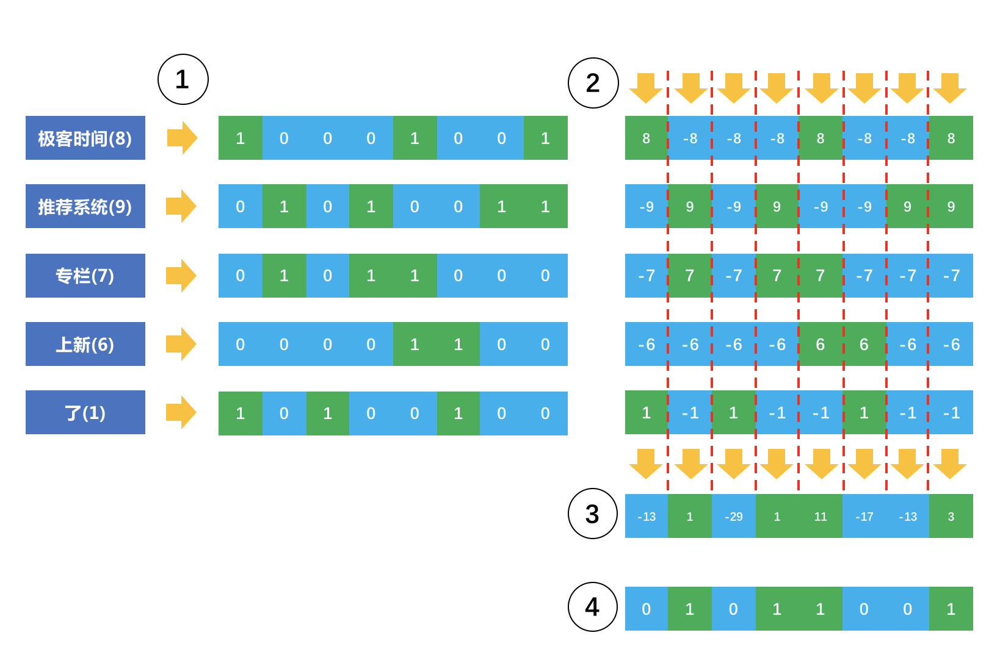
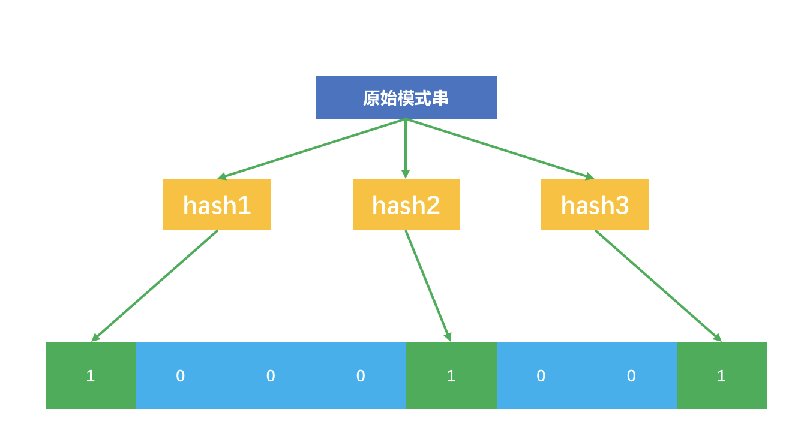
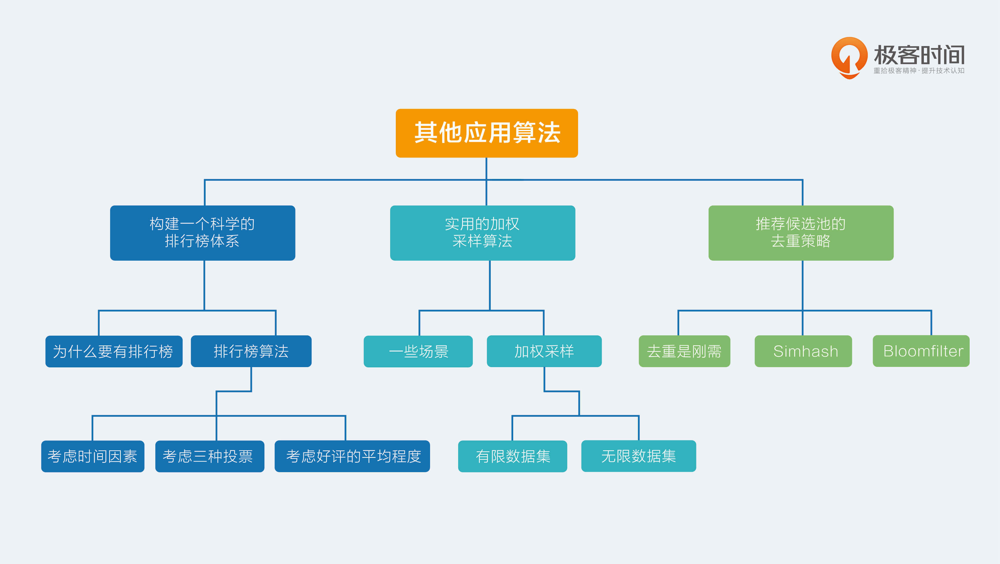

- 00 开篇词 用知识去对抗技术不平等.md
- 01 你真的需要个性化推荐系统吗_.md
- 02 个性化推荐系统有哪些绕不开的经典问题？.md
- 03 这些你必须应该具备的思维模式.md
- 04 画鬼容易画人难：用户画像的“能”和“不能”.md
- 05 从文本到用户画像有多远.md
- 06 超越标签的内容推荐系统.md
- 07 人以群分，你是什么人就看到什么世界.md
- 08 解密“看了又看”和“买了又买”.md
- 09 协同过滤中的相似度计算方法有哪些.md
- 10 那些在Netflix Prize中大放异彩的推荐算法.md
- 11 Facebook是怎么为十亿人互相推荐好友的.md
- 12 如果关注排序效果，那么这个模型可以帮到你.md
- 13 经典模型融合办法：线性模型和树模型的组合拳.md
- 14 一网打尽协同过滤、矩阵分解和线性模型.md
- 15 深度和宽度兼具的融合模型 Wide and Deep.md
- 16 简单却有效的Bandit算法.md
- 17 结合上下文信息的Bandit算法.md
- 18 如何将Bandit算法与协同过滤结合使用.md
- 19 深度学习在推荐系统中的应用有哪些_.md
- 20 用RNN构建个性化音乐播单.md
- 21 构建一个科学的排行榜体系.md
- 22 实用的加权采样算法.md
- 23 推荐候选池的去重策略.md
- 24 典型的信息流架构是什么样的.md
- 25 Netflix个性化推荐架构.md
- 26 总览推荐架构和搜索、广告的关系.md
- 27 巧妇难为无米之炊：数据采集关键要素.md
- 28 让你的推荐系统反应更快：实时推荐.md
- 29 让数据驱动落地，你需要一个实验平台.md
- 30 推荐系统服务化、存储选型及API设计.md
- 31 推荐系统的测试方法及常用指标介绍.md
- 32 道高一尺魔高一丈：推荐系统的攻防.md
- 33 和推荐系统有关的开源工具及框架介绍.md
- 34 推荐系统在互联网产品商业链条中的地位.md
- 35 说说信息流的前世今生.md
- 36 组建推荐团队及工程师的学习路径.md
- 加餐 推荐系统的参考阅读.md
- 结束语 遇“荐”之后，江湖再见.md
23 推荐候选池的去重策略
今天依然要讲到两个问题，它们看似和推荐系统没有必然关系，但实际上，在你构建自己的推荐系统的时候，不可避免地会遇到这两个问题。
去重是刚需
在推荐系统中，有一个刚需就是去重，那么说在哪些地方有去重的需求呢？
主要是在两个地方：一个是内容源去重，另一个是不重复给用户推荐。
先说说内容源的去重，这部分以前几年的图文信息流推荐为典型的例子。
如果一个平台自己不生产内容，只是做内容搬运和聚合分发，那么从大量第三方的内容生产处抓取内容，就难免遇到相似甚至重复的内容。这就需要对内容做一个重复检测了。
对内容做重复检测，直观的思路是分词，然后提取关键词，再两两计算词向量之间的距离，距离小于一定阈值后就判定为重复。然而，这对于海量内容，比如几千万以上的内容来说简直就是灾难。
其实，内容源去重并不是仅在推荐系统中才首次出现，这早在搜索引擎时代就是一个刚需了，搜索引擎把整个互联网的网页都下载到自己的服务器上，这时，重复冗余的内容就需要被检测出来。
另一个需求是在内容阅读类推荐场景下，给用户推荐的内容不要重复，推荐过的内容就不再出现在推荐候选集中。
在你刷一个信息流产品时，不断看到重复的内容，想必不是使用感很好的一件事。因为以抓取作为主要内容来源的信息流产品，不同于社交网站上用户自发产生内容，除非遇到用户恶意发送，否则后者是不容易重复的。
以上两个场景，需要在你打造自己的推荐系统时予以考虑和应对。今天就介绍两种最常见的去重算法，两者有相通之处也有不同的之处，听我慢慢说来。
Simhash
内容重复检测，是搜索引擎公司最先遇到的，所以Google在07年公开了他们内部的内容重复检测算法，这个算法简单有效，甚至造福了今天的信息流推荐产品。
对于很长的内容，如果只是检测绝对重复，也就是说完全一模一样的那种情况，那么使用MD5这样的信息指纹方法非常高效，无需再去分词、提取关键词和计算关键词向量之间的距离。
我们直接将原始的内容映射为一个短字符串，这个短字符串就是原始内容的指纹，虽然不是绝对保证和原始内容一一映射，但是不同内容能得到相同指纹的概率非常小。
只是这种信息指纹的方法有个非常明显的坏处就是，哪怕原始内容改一个字，得到的信息指纹就会截然不同。
这就没法愉快地玩耍了，你一定希望的是只要主要内容不变，就算一些不太重要的词句不同，也仍然可以得到相近甚至相同的指纹。这才能更加灵活地进行内容重复检测。是否有这样的算法？有，就是Simhash。
Simhash核心思想也是为每个内容生成一个整数表示的指纹，然后用这个指纹去做重复或者相似的检测。下面这个示意图说明了Simhash如何把一个原始内容表示成一个整数指纹。

好，现在详细说明一下这个过程。
- 首先，对原始内容分词，并且计算每个词的权重；
- 对每个词哈希成一个整数，并且把这个整数对应的二进制序列中的0变成-1，1还是1，得到一个1和-1组成的向量；
- 把每个词哈希后的向量乘以词的权重，得到一个新的加权向量；
- 把每个词的加权向量相加，得到一个最终向量，这个向量中每个元素有正有负；
- 把最终这个向量中元素为正的替换成1，为负的替换成0，这个向量变成一个二进制位序列，也就是最终变成了一个整数。
最终这个整数就代表了原始的内容。这个Simhash奇妙在哪呢？
看这个示意图中，我故意加了一个不太重要的词“了”，它的权重是1，对应的加权向量元素不是1就是-1，在上述的第四步中，如果这个词对应的向量缺少了，其实根本不影响最终得到那个整数，因为它很难改变最终向量元素的正负。这就是为什么那些不太重要的词不影响内容之间的重复检测。
Simhash为每一个内容生成一个整数指纹，其中的关键是把每个词哈希成一个整数，这一步常常采用Jenkins算法。这里简单示意的整数只有8个二进制位，实际上可能需要64个二进制位的整数，甚至范围更大。
得到每个内容的Simhash指纹后，可以两两计算汉明距离，比较二进制位不同个数，其实就是计算两个指纹的异或，异或结果中如果包含3个以下的1，则认为两条内容重复。
为了高效，也可以直接认为指纹相同才重复，视情况而定。
Bloomfilter
除了内容重复检测，还有一个需求是防止已经推荐的内容被重复推荐。这个刚需和上述内容重复相比，最大的不同就是过滤对象不同，上述Simhash过滤对象是内容本身，而这里则一般是内容的ID。
内容的ID一般是用一个UUID表示，是一个不太长的字符串或者整数。
对于这类形如模式串的去重，显然可以用单独专门的数据库来保存，为了高效，甚至可以为它建上索引。
但对于用户量巨大的情况下，这个做法对存储的消耗则不可小看。实际上，解决这类看一个字符串在不在一个集合中的问题，有一个有点老但很好用的做法，就是Bloomfilter，有时候也被称为布隆过滤器。
布隆过滤器的原理也要用到哈希函数。它包含两部分：一个很长的二进制位向量，和一系列哈希函数。Bloomfilter是一个很巧妙的设计，它先把原始要查询的集合映射到一个长度为m的二进制位向量上去，它映射的方法是：
- 设计n个互相独立的哈希函数，准备一个长度为m的二进制向量，最开始全是0；
- 每个哈希函数把集合内的元素映射为一个不超过m的正整数k，m就是二进制向量的长度；
- 把这个二进制向量中的第k个位置设置为1；也就是一个元素会在二进制向量中对应n个位置为1。
我放了一个示意图。

这个示意图中，原始的模式串经过三个互相独立的哈希函数，映射到8位二进制向量中的三个位置了。
原始的模式串集合经过这样的处理后，就得到一个很大的二进制向量。在应用阶段时，假如来了一个模式串s，需要查询是否在这个集合中，也需要经过同样的上述步骤。
每个哈希函数对这个模式串s哈希后都得到一个整数，看看这个整数在二进制向量中所指示的位置是不是1，如果每个哈希函数所指示的位置都是1，就说明模式串s已经在集合中了。
需要说明的是，Bloomfilter也并不是百分之百保证的，有很小的概率把原本不存在集合中的模式串判断为存在。这样就会造成那些明明还没有推荐给用户的内容ID就再也不会推荐给用户了，当然，这个小概率是可以承受的。
总结
好了，今天介绍了两种去重算法。在推荐系统中，虽然我们十分关心推荐匹配的效果，但是别忘了，对原始内容的挖掘和清洗往往更加重要。这其中就包括对重复内容的检测。
两种去重策略都是牺牲一点误伤的概率换得大幅度的效率提升，具体的做法都是要借助哈希函数。只是哈希函数的结果在两个算法中有不同的处理手段，Simhash是加权，Bloomfilter则是用来做寻址。
最后，留给你一个思考题，由于今天的内容比较简单，留给你思考题也简单，请你想一想，如果要从Bloomfilter中去掉一个元素，该怎么做？欢迎给我留言，我们一起讨论。
感谢你的收听，我们下次再见。

© 2019 - 2023 Liangliang Lee. Powered by gin and hexo-theme-book.